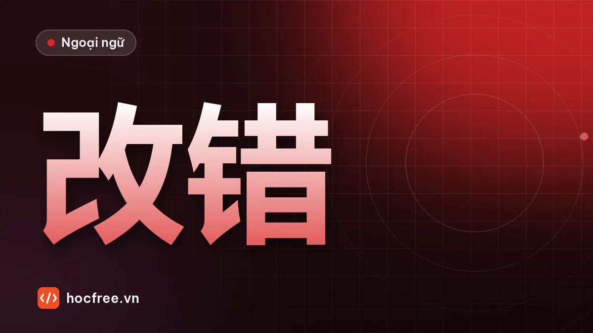

Chữa đề HSK đúng cách, sổ lỗi sai và kế hoạch 2 tuần cuối
Chữa đề theo 4 lớp, phân loại lỗi từ vựng, ngữ pháp, nghe, đọc, viết, quy tắc điều chỉnh kế hoạch và lịch 14 ngày cuối trước ngày thi.

Học xong bài này, bạn sẽ
- Chữa đề theo 4 lớp
- Phân loại lỗi và chọn việc ôn
- Lập lịch 14 ngày cuối và ngày thi
Nên học trước: Đề thi thử HSK 3 tự biên soạn
Nội dung bài viết
Làm đề mà không chữa kỹ thì chỉ là "đo nhiệt độ", không chữa được bệnh. Điểm số tăng lên nhờ những gì bạn làm sau khi chấm bài. Bài này dạy quy trình chữa đề 4 lớp, cách phân loại lỗi theo kỹ năng, quy tắc điều chỉnh kế hoạch và lịch 14 ngày cuối trước ngày thi.
Chữa đề 4 lớp
Với mỗi câu sai (và cả câu đúng nhờ đoán), đi qua 4 lớp:
| Lớp | Câu hỏi | Ví dụ |
|---|---|---|
| 1. Đáp án | Đáp án đúng là gì, ở đâu trong bài nghe / đọc? | Câu 7: đúng là B, câu "不过改到四点了". |
| 2. Nguyên nhân | Vì sao mình chọn sai? | Nghe được 三点 rồi chọn ngay, không nghe phần sau 不过. |
| 3. Kiến thức | Kiến thức nào bị thiếu hoặc chưa vững? | Từ đổi chiều 不过 / 可是 / 本来. |
| 4. Hành động | Làm gì cụ thể để không sai lại? | Nghe lại 10 câu có 本来, 不过 trong bài nghe; thêm 3 câu vào Anki. |
Ghi mỗi câu sai thành một dòng trong sổ lỗi. Lớp 4 phải là hành động làm được trong 1–2 ngày, không viết chung chung "học thêm nghe".
Phân loại lỗi
| Mã | Loại lỗi | Dấu hiệu | Cách sửa |
|---|---|---|---|
| V | Từ vựng | Gặp từ không biết, nhầm nghĩa | Thêm vào Anki kèm câu ví dụ; ôn từ cùng chủ đề |
| G | Ngữ pháp | Sai vị trí, sai cấu trúc 把, 被, bổ ngữ… | Đọc lại bài gốc, viết 2 câu mới đúng |
| L | Nghe | Biết từ nhưng không nhận ra khi nghe; bị bẫy đổi chiều | Nghe chép đúng đoạn đó 3 lần; luyện từ có audio |
| Đ | Đọc | Hiểu sai ý đoạn, hết giờ | Đọc lại có bấm giờ; luyện tìm từ khóa |
| W | Viết | Sai chữ, thiếu nét, câu sai ngữ pháp | Viết tay 5 lần chữ sai; kiểm tra câu bằng 3 điểm |
| T | Tâm lý, thời gian | Biết nhưng vội, đọc sai câu hỏi, bỏ trống | Luyện đề bấm giờ; quy tắc không bỏ trống |
Sau khi chữa, đếm số lỗi mỗi mã. Hai mã nhiều nhất là trọng tâm 2 tuần cuối.
Quy tắc điều chỉnh kế hoạch
- Một phần dưới 60%: dành 50% thời gian ôn cho phần đó, các phần khác duy trì.
- Lỗi V chiếm nhiều nhất: tăng thẻ mới lên 15 thẻ/ngày trong 10 ngày, chỉ lấy từ trong danh sách từ vựng HSK 3.0 mà bạn chưa học.
- Lỗi T nhiều: không học thêm kiến thức; luyện đề bấm giờ nghiêm ngặt và tập quy tắc "đánh dấu – đi tiếp – quay lại".
- Hai lần thi thử liên tiếp đều đạt mục tiêu: giảm khối lượng, chuyển sang duy trì và ôn lỗi cũ.
Lịch 14 ngày cuối (60–90 phút/ngày)
| Ngày | Việc chính |
|---|---|
| 1 | Chữa đề thi thử theo 4 lớp, đếm lỗi theo mã |
| 2–4 | Ôn trọng tâm 1 (mã lỗi nhiều nhất): bài gốc, bài luyện, 20 câu mới tự soạn |
| 5 | Làm một đề mẫu chính thức phần nghe + đọc, bấm giờ, chữa |
| 6–8 | Ôn trọng tâm 2; mỗi ngày 3 câu viết theo tranh, 1 bài nói ghi âm |
| 9 | Thi thử đầy đủ lần 2 (đề mẫu chính thức nếu có), đúng giờ thi thật |
| 10 | Chữa đề lần 2; so sánh với lần 1 |
| 11–12 | Ôn toàn bộ sổ lỗi; đọc lại 15 cặp dễ nhầm và các bài luyện ngữ pháp |
| 13 | Học nhẹ: ôn Anki, đọc to 2 đoạn văn, nói 2 bài. Chuẩn bị giấy tờ, kiểm tra địa điểm thi |
| 14 (trước ngày thi) | Nghỉ ngơi. Chỉ ôn Anki 15 phút, ngủ sớm |
Mỗi ngày trong 14 ngày vẫn giữ 15 phút ôn Anki và 10 phút nghe chép. Hai thói quen này là "mạch máu" của cả lộ trình.
Ngày thi
- Ăn sáng nhẹ, đến sớm 30 phút, mang đủ giấy tờ.
- Phần nghe: đọc trước đáp án; không nghe được thì chọn tạm, đi tiếp, không tiếc câu cũ.
- Phần đọc: làm dạng nhanh trước, dồn thời gian cho đoạn văn; không bỏ trống.
- Phần viết: điền chữ trước; câu theo tranh viết ngắn, đúng, có từ gợi ý.
- Phần nói: dùng khung câu đã luyện; quên từ thì diễn đạt bằng từ khác, đừng im lặng.
Bài tập
1. Chữa toàn bộ câu sai trong đề thi thử theo 4 lớp, mỗi câu một dòng.
2. Đếm số lỗi theo 6 mã. Viết ra 2 trọng tâm cho 14 ngày tới.
3. Điền lịch 14 ngày của riêng bạn: ghi rõ ngày thi thật, ngày thi thử lần 2, giờ học cố định.
Kiểm tra cuối bài
1. Bốn lớp chữa đề là gì?
2. Lỗi T nhiều thì nên làm gì?
3. Ngày trước ngày thi nên làm gì?
Xem đáp án
- Đáp án, nguyên nhân, kiến thức, hành động.
- Không học thêm kiến thức mới; luyện đề bấm giờ và quy tắc đánh dấu – đi tiếp – quay lại.
- Nghỉ ngơi, chỉ ôn nhẹ 15 phút, chuẩn bị giấy tờ, ngủ sớm.
Tổng kết
- Điểm tăng nhờ chữa đề, không nhờ làm nhiều đề.
- Phân loại lỗi để biết ôn gì; điều chỉnh kế hoạch theo quy tắc, không theo cảm giác.
- 14 ngày cuối: 2 lần thi thử, ôn trọng tâm, giảm tải trước ngày thi.
Bài cuối cùng của lộ trình: dự án cuối khóa.
Bài tập thực hành
- Chữa lại đề thi thử theo 4 lớp, mỗi câu sai một dòng trong sổ lỗi.
- Viết lịch 14 ngày cuối của riêng bạn theo mẫu trong bài.
Làm xong bài tập mới chuyển sang bài tiếp theo: đọc to, tự viết chữ Hán và tự chấm đáp án là cách duy nhất để nhớ lâu.